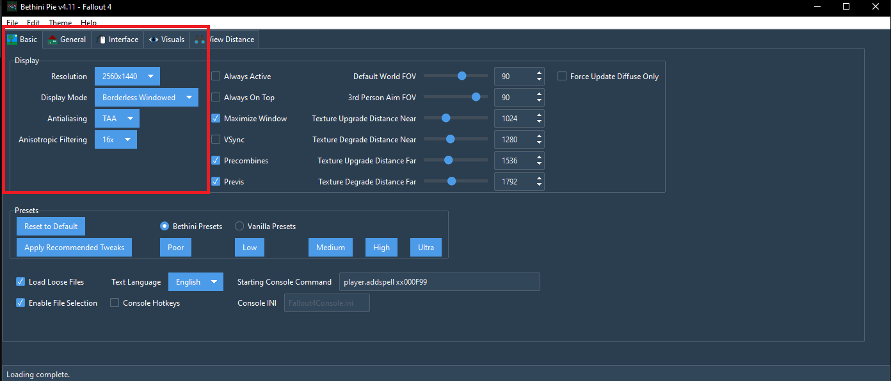
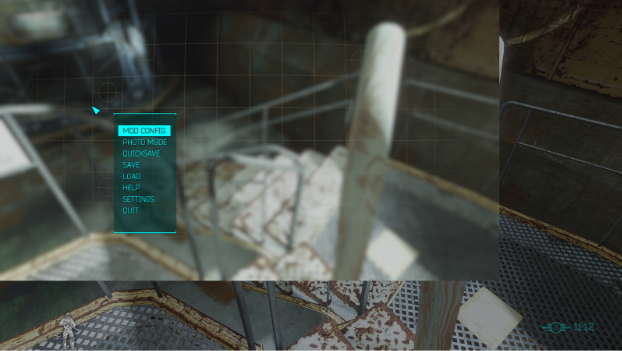
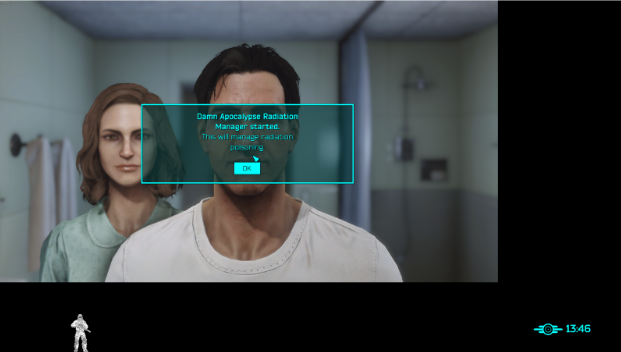

Fallout Anomaly Installation Guide
Community Links
Installation Video
Disclaimer
- Beta Stage: Fallout Anomaly is currently in beta. Updates may require starting a new save. We recommend waiting until release if you're not ready for this process.
- Steam Version Only: Only the Steam version of Fallout 4 is supported. Ensure your game is updated to version 1.10.980.0 for compatibility.
Search Guide Content
Hardware Requirements
Important: Install in dedicated folder: C:\Fallout Modlist\Fallout Anomaly
Required Components
Nexus Premium
Highly recommended for uncapped downloads and automated installation.
Subscribe to Nexus PremiumInstallation Guide
Open Wabbajack, click the ⚙️ cogwheel, and log in under the Nexus panel.

Antivirus Setup
To prevent interference, add a folder exclusion for your entire install directory:
-
Open Windows Security → Virus & threat protection

-
Scroll to Exclusions and select Add or remove exclusions

-
Click Add an exclusion → choose Folder and browse to your install folder

📥 Downloading Fallout Anomaly
- Locate Fallout Anomaly in the Wabbajack Browser and download the file.
- Set both Install Location and Download Location on the same drive for best performance.

Could Not Download Mod
- Fix: Manual Download - Download the mod manually and place it in Wabbajack's download folder.
- Check: Nexus Mods Status if needed.
Mod Is Not a Whitelisted Download
- Wait: For a new release – The modlist may have been updated, making an old mod link invalid.
- Action: Notify us on Discord.
Missing Game Files
- Check: Update game to next-gen version.
Wabbajack Could Not Find My Game Folder
- Check: Pirated versions are not supported.
- Check: Ensure Fallout 4 is owned on Steam.
Google Drive Issues
- If downloads fail, download manually.
- Place the file in your Wabbajack download folder.
- Restart the install.
ENB Download Issues
- If ENB download fails: Download manually.
- Move file to: Anomaly Downloads folder (created by Wabbajack).
- DO NOT EXTRACT: Place the file as-is in the folder.
- Restart: Relaunch Wabbajack and run installer again.
Congratulations, you've installed Fallout Anomaly! Before you jump into the game, there are a few essential steps to complete to ensure everything runs smoothly.
Next Steps: Navigate to the Launching tab above to learn how to properly start the game and configure your settings.
Launching Fallout Anomaly
To start the game with all mods properly loaded, click the "Launch Fallout Anomaly" button in the top-right corner of the MO2 interface.
Warning: Always launch the game through Mod Organizer 2. Launching directly from Steam will not load any mods.
If your game crashes, a crash log will be generated in your Overwrite folder. You can use this log to diagnose the issue. Please report crashes via our Discord or bug report form.
To change your resolution, use the BethINI tool. Close MO2, run `BethINI.exe` as an administrator from the `Tools` folder, set your resolution in the Basic tab, and save.

Once you are in-game, you will be prompted to apply the MCM (Mod Configuration Menu) preset. This is a critical step to ensure all mods are configured correctly.

If you don't like the cinematic black bars (letterboxing), you can disable them via the ENB menu.
- Press the `~` key to open the console.
- Press `END` to open the ENB menu.
- In the Post Processing section, uncheck the "Letterbox" option.
- Click "Save Configuration" in the top-left.
- Press `END` and `~` again to close the menus.
Fallout Anomaly includes several optional mods that you can enable or disable in MO2 to customize your experience.
Troubleshooting Guide
"Could Not Download MOD"
- Fix: Manually download the mod and place it in Wabbajack's download folder.
- Check: Visit the Nexus Mods Status page to see if there is an outage.
"Mod Is Not a Whitelisted Download"
- Wait: The modlist may have been updated. Wait for a new release.
- Action: Notify us on Discord if the issue persists.
"Missing Game Files"
- Check: Ensure your game is updated to the next-gen version (Wabbajack will handle the downgrading).
"Wabbajack Could Not Find My Game Folder"
- Check: Pirated versions are not supported.
- Check: Ensure you own Fallout 4 on Steam.
Google Drive Issues
- If downloads fail, download manually.
- Place the file in your Wabbajack download folder.
- Restart the install.
ENB Download Issues
- If ENB download fails: Download manually.
- Move file to: Anomaly Downloads folder (created by Wabbajack).
- DO NOT EXTRACT: Place the file as-is in the folder.
- Restart: Relaunch Wabbajack and run installer again.
Common Display Issues
Problem: Screen appears in upper left corner or boxed display. Usually affects 1440p+ and ultrawide monitors.


Disable Third-Party Software
- Disable resolution scaling software
- Close display management tools
- Use Windows native settings only
Check Monitor Settings
- Right-click desktop → Display settings
- Set to native resolution
- Test the game
Fix Resolution in BethINI
- Close MO2 first!
- Run BethINI as administrator
- Set correct resolution
- Save and close
- Reopen MO2 and test
Verify Display Mode
- Open MO2
- Check Fallout4Prefs.ini
- Verify
bFullScreen=1ORbBorderless=1 - Only one should be set to 1
Last Resort: DPI Scaling Fix
If the above steps fail, try this before making a support post:
- Go to your Stock Folder inside your Installation Directory
- Right-click on
Fallout4.exeand select Properties - Navigate to the Compatibility tab
- Click on "Change High DPI settings"
- Check the box for "High DPI Scaling Override"
- Set the dropdown menu to "Application"
Still having issues? Submit a bug report at: https://falloutanomaly.fillout.com/bugreports
Gameplay Guide
Note: The mods featured in the sections below also play a major role in shaping the survival experience. Be sure to explore them to get the full intended gameplay challenge.
MAIM is a realistic combat and medical overhaul that introduces lethal headshots, injuries, bleeding, pain, and more. It is highly customizable through the MCM, allowing most features to be tweaked or disabled. The system remains performance-friendly with minimal scripts.
This is a major gameplay overhaul. We recommend reading the full mod page on Nexus Mods. A solid MCM setup is pre-configured for you out of the box.
Pro Tip: Healing items do not stack with themselves, but you can combine different effects (e.g., SP-1 + SP-2). Pre-med with TXA and ibuprofen before a firefight for best results.
The Radiation Loop
Understanding the vicious cycle of radiation damage and IRA acquisition is crucial for survival. This diagram illustrates how radiation exposure can lead to a compounding negative feedback loop that gets worse without intervention.
1. Initial Exposure
Environmental radiation from zones, food, water, or hazards begins damaging your tissues.
2. RAD Damage Accumulates
Without treatment, radiation damage builds up, reducing your maximum HP and overall health.
3. IRA Increases
Internal Radioactive Absorption rises, making you more susceptible to future radiation damage.
4. Vulnerability Spiral
Higher IRA means more damage from the same exposure, creating a deadly feedback loop.
Breaking the Cycle
- Consuming alcohol lowers IRA levels, helping break this deadly cycle
- Proper treatment with radiation medicines can interrupt the progression before it becomes fatal
- Use protective gear to prevent initial exposure
| Type | Description | Sources |
|---|---|---|
| RAD | Tissue Damage | Environmental exposure |
| IRA | Ingested Radioactive Particles | Food, water, weather, hazards, untreated RADs |
| Medicine | Effect | Treats |
|---|---|---|
| Cleansing Tonic | Cures Radiation Poisoning |
Poisoning:
|
| Ca-DTPA Injector | Fast Rads/IRA removal. Removes Rads/IRA over 30s; perks can make it faster. Base effect: -25 Rads / -50 IRA; scales with Medicine skill/perks. Player cannot sprint while effect is active. Does NOT cure Radiation Poisoning |
IRA:
RAD:
|
| MutAway | Heals RADs directly |
IRA:
RAD:
|
| Potassium Iodide | +200 RAD resistance and reduces RADs by 0.5/sec for 300s. Replaces Vanilla Rad-X. Increases IRA resistance |
IRA:
RAD:
|
| Pb-Jelly | Increases RAD resistance |
IRA:
RAD:
|
| Booze | Lowers IRA levels |
IRA:
RAD:
|
| Antibiotics | Cure infections caused by radiation exposure |
Infections:
|
| Sleep Aid | Treats insomnia (Warning: may be addictive) |
Insomnia:
|
| Anodyne | Relieves fatigue from radiation exposure |
Fatigue:
|
| Anti-Parasitic | Removes parasites acquired from contaminated sources |
Parasites:
|
| Stimulants | Counters lethargy caused by radiation sickness |
Lethargy:
|
| Energy Pills | Mitigates weakness from radiation damage |
Weakness:
|
Emoji Legend:
✅ - Actively reduces value | ❌ - No effect | 🛡️ - Increases resistance/preventative effect
The Wastes are unforgiving. Radiation is no longer a simple number—it's a dual-layered system where RADs and IRAs feed into each other, creating a deadly loop that can take hold in seconds or over days. Untreated radiation will eventually kill you, even if you leave radioactive areas. Always carry enough protective gear and medication. Stock up on bandages, painkillers, radiation medicines (especially Cleansing Tonic for radiation poisoning), and limb restoration tools. Remember: consuming alcohol can help break the radiation loop by lowering IRA levels. Being prepared isn't optional—it's survival.
- Utilizes the YAE mod, which introduces new skills and modifies the perk system.
- Adds new traits for enhanced character customization.
A major upgrade to Fallout 4's Skills and Perks system. Inspired by Be Exceptional and You Are SPECIAL!, but expands far beyond them.
Each SPECIAL stat has 4 tied Skills (Luck has 2 but boosts all Skills slightly). Skills range from 0 to 100 and affect gameplay like damage, crafting, healing, and more.
This system gives you more freedom to build the kind of character you want, with meaningful choices and better progression. Check your Pip-Boy after installing to get started.
True Damage reworks Fallout's combat mechanics for realism and balance:
Munitions is a modular, lore-friendly ammo expansion project that adds new ballistic, energy, and explosive rounds into the game without breaking balance.
SCOURGE brings realism to NPC combat by replacing predictable scaling with randomized stat generation.
Example:
- W/S/A/D – Move Forward/Backward/Strafe Left/Right
- Left Shift – Sprint
- C – Run
- Spacebar – Jump
- Left Ctrl – Sneak
- Caps Lock – Toggle Always Run
- X – Auto-Move
- F – Activate / Interact
- Mouse1 – Attack / Fire
- Mouse2 – Aim / Block
- Left Alt – Bash / Power Attack / Grenade
- R – Ready Weapon / Reload
- Q – VATS
- J – Holster / Lower Weapon
- Tab – Open Pip-Boy
- Mouse3 – Toggle POV / Workshop
- Esc – Pause
- I – Quick Inventory
- M – Quick Map
🎯 Combat & Weapons
- Bullet in Chamber: R (Reload/Check), J (Holster)
- VAFS Redux: Z (Critical), G (Focus)
- HOTC: K (Examine Prey)
- Replaceable Armor Plates: Y (Use Plate)
🏃 Movement & Actions
- Enhanced Movement: N (Dodge)
- Wheel Menu: H (Open Wheel)
- Workshop: Home (Workshop Mode)
🖥️ Interface & Display
- Immersive HUD: F2 (Toggle HUD)
- MODExplorer: \ (Show Mod List)
- Barber/Surgery: ↓ (Switch View)
🔧 Crafting & Equipment
- Dank_ECO: PgDn (PA Workbench), PgUp (Universal), U (Attack Mode)
🌍 Environment & Audio
- Vivid Weathers: Numpad / (Weather)
- Volume Sliders: Numpad 0 (Mute Music)
- Wasteland Codex: Numpad 3 (Play Entry)
More Details Available
This gameplay guide covers the essential systems and mechanics. For detailed information about Weather & Environment, Settlement & Building, Companions & NPCs, Crafting & Equipment, Audio & Visual, and Character Customization, please visit the About page where you'll find comprehensive details about all these features.
Character Builder
Wasteland Assistant
Struggling with your new identity in the Commonwealth? Let our advanced RobCo terminal assist you. Describe your desired playstyle or character concept below, and we'll generate a custom build or backstory to get you started on your journey.
Generate a Character Build
Describe the kind of survivor you want to be (e.g., "a sneaky sniper who uses rifles," "a charismatic leader who builds large settlements," or "a brute who smashes things with a sledgehammer").
Generate a Character Backstory
Provide a few keywords about your character's past or personality (e.g., "ex-raider, regretful, good with pistols" or "scared scientist, smart, avoids fights").
Frequently Asked Questions
Crashing on startup is often caused by a few common issues:
- Overlays: Make sure you have disabled all overlays, including Steam, Discord, and any recording software like Medal or OBS.
- Antivirus: Your antivirus might be interfering with the modlist. Please ensure you have set up exclusions for the entire Fallout Anomaly installation folder.
- Missing Prerequisites: Double-check that you have installed all the required components from Step 1, including Visual C++ Redistributables and .NET Frameworks.
This is usually caused by an issue with the Buffout 4 mod. Please check the "Troubleshooting" section for detailed instructions on how to resolve this specific issue.
When a new version of Fallout Anomaly is released, you can update by simply re-running the Wabbajack installer. Make sure to point it to the same installation and download folders. Wabbajack will automatically handle the update process.
Slow download speeds are typically related to Nexus Mods server load. If you are a free user, your download speed is capped. For faster downloads, consider subscribing to Nexus Premium. You can also try changing your preferred download server in your Nexus Mods profile settings.
Performance can be improved by:
- Lowering ENB Quality: In-game, press Shift+Enter to open the ENB menu and select a lower-quality preset.
- Adjusting In-Game Settings: Reduce settings like shadow distance, godrays, and texture quality in the main menu.
- Disabling Optional Mods: Some optional graphics mods in MO2 can be disabled for a performance boost.
Yes! Controller support is included. Check the "Known Issues" tab for specific controller setup instructions and any known limitations.
No, Fallout Anomaly requires a fresh start. The modlist makes extensive changes to the game that are incompatible with vanilla or other modded saves. You'll need to start a new character.
This usually means:
- Nexus Mods Issues: Check if Nexus Mods is experiencing downtime.
- Mod Updates: The mod may have been updated or removed. Wait for a new modlist release.
- Manual Download: You can manually download the mod and place it in Wabbajack's download folder.
Ensure that you have launched Fallout 4 at least once through Steam to create the necessary registry entries. Also, make sure you are not using a pirated version of the game.
Yes, this can happen. Some modding tools or files can trigger false positives in antivirus software. It is safe to ignore these warnings, provided you have downloaded the modlist from the official Wabbajack UI. Make sure you have added an exclusion for your installation folder.
The best place to get help is our official Discord server. We have a dedicated support channel where you can ask questions and get assistance from the community and the development team.
There are several ways to support the project:
- Donations: Help fund server costs and development through our donation page.
- Community: Join our Discord and help other users with their questions.
- Feedback: Provide constructive feedback and report bugs to help improve the modlist.
Help & Resources
Community Support & Resources
Get help, connect with the community, and access all our official resources in one place.
Discord Community
The quickest way to receive support is by joining our Discord community. Get direct access to our team and fellow users.
Join DiscordBug Reports
Found a bug? Report it through our official form to help us improve the experience for everyone.
Report BugSuggestions
Have an idea to improve Fallout Anomaly? Share your suggestions with the development team.
Submit SuggestionMod List
View the complete mod list and load order for Fallout Anomaly on Load Order Library.
View Mod ListSupport the Project
Help fund server costs and development to keep Fallout Anomaly free and continuously improved.
DonateAdditional Resources
Thank You
Thank you for your dedication to our community and team. We are excited about the future and confident that, together, we will continue to shape Anomaly into an extraordinary mod list for Fallout 4.